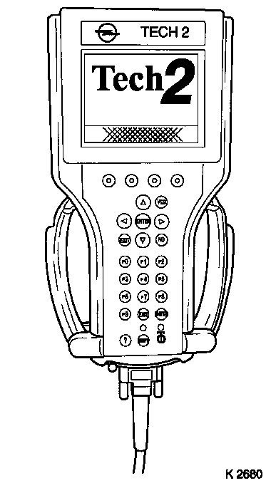

Removal and Replacement
EHPS control moduleThe power steering control module is an integrated part of the power steering unit. It cannot be repaired separately. If the control module requires replacement, the entire power steering unit must be changed.
When changing the power steering unit, the control module must be programmed with TECH 2 once the power steering unit has been fitted, see After changing a control module.

For power steering unit replacement, see Power steering unit, Z19